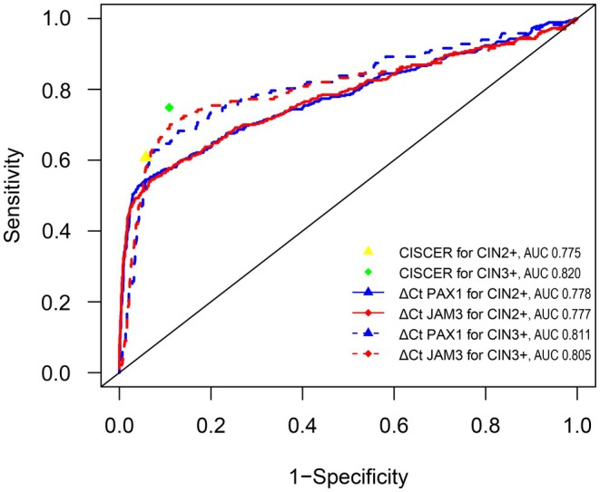
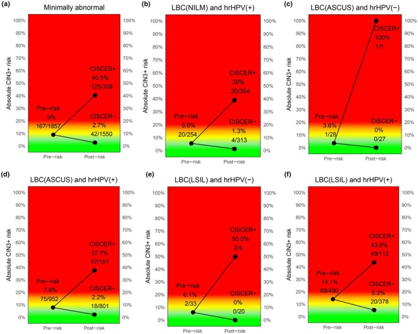

1Background & Objective
- Problem: hrHPV+ with normal cytology, ASC-US or LSIL — complex algorithms, excessive colposcopy referral.
- Objective: test CISCER (PAX1/JAM3 methylation) for managing minimally abnormal results.
2Study Design & Cohort
METHY2
NCT03960879
METHY3
NCT04646954
2019–22
enrollment
- Design: cross-sectional, colposcopy-referred, PUMCH; histology as gold standard.
- Inclusion: women with minimally abnormal screening results & histologic outcome.
- Minimally abnormal: hrHPV+ / NILM · ASC-US · LSIL.
- Outcome: CIN3+ detection; absolute risk & referrals within one screening round.
- Analysis: ROC/AUC; sensitivity & specificity; immediate risk stratification.
13.72
ΔCt PAX1 · normal
5.24
ΔCt PAX1 · CIN3
3.74
ΔCt PAX1 · cancer
15.08
ΔCt JAM3 · normal
8.24
ΔCt JAM3 · CIN3
5.85
ΔCt JAM3 · cancer
167
CIN3+ cases
9.0%
baseline CIN3+ risk
11.1
referrals / CIN3+ (no triage)
- Inclusion: ≥18 y, intact cervix, NILM/ASC-US/LSIL cytology, full consent.
- Exclusion: pregnancy · HIV+ · transplant on antirejection.
- Samples: cervical cytology → hrHPV DNA · cytology · CISCER methylation.
- Referral: per ASCCP/China guidelines; methylation not an indication.
- Statistics: Mann–Whitney U · χ² · ROC; risk with 95% CI.
- Readout: CISCER(+): ΔCt PAX1 ≤6.6 or JAM3 ≤10.0.
Lower ΔCt = higher methylation. Methylation positive was NOT a colposcopy indication — tested independently.
3CISCER Performance — CIN3+

Fig. ROC — CISCER AUC 0.820 vs PAX1 0.778 & JAM3 0.777.

Fig. Pre-/post-test CIN3+ risk — referral reduction per one CIN3+ found (11.1 → 2.5).
74.9%
Sensitivity
89.1%
Specificity
97.3%
NPV
0.820
AUC CIN3+
- Superior to single genes: CISCER AUC 0.820 > PAX1 0.778 / JAM3 0.777.
- Age >50 y: Se 79.5% / Sp 89.3% — high accuracy in older women.
4Performance by Cytology & Age
5Risk Stratification & Referral Reduction
13.7→3.7
ΔCt PAX1 · normal→cancer
15.1→5.9
ΔCt JAM3 · normal→cancer
40.5%
CIN3+ risk · CISCER(+)
2.7%
CIN3+ risk · CISCER(−)
11.1→2.5
referrals per CIN3+ found
- Risk gradient 15×: 40.5% vs 2.7% — clear positive/negative separation.
- Actionable: CISCER(+) → colposcopy; CISCER(−) → defer & re-screen.